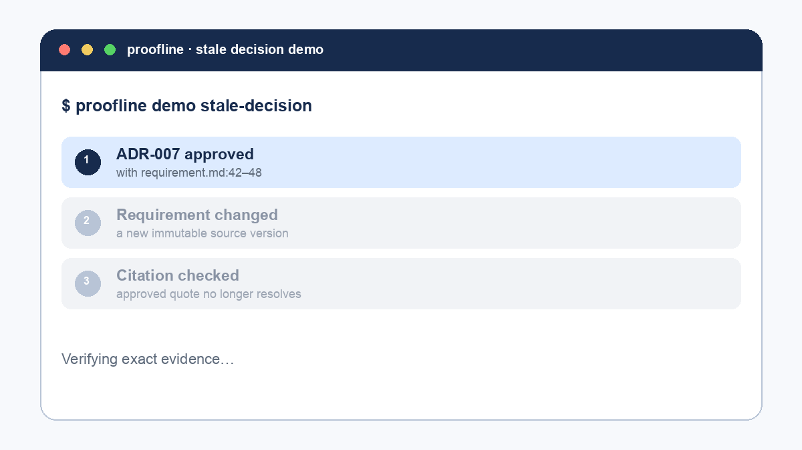

View on GitHub
View on GitHub
evidence.zip
Normative Decision Evidence Package, self-contained and verifiable offline.
v1.1.0 · experimental pre-alpha · local-first
Engineering decision memory
Proofline keeps an ADR tied to the immutable requirement version and exact source lines that justified it. When that evidence changes, the decision becomes reviewable—not silently stale.
$ proofline demo stale-decisionRuns locally with an ephemeral database and no model provider.

The product story
Proofline follows one narrow vertical slice from approved requirement to reviewable decision. Every derived claim keeps a resolvable source identity and exact source span.
requirement.md:42-48 rules out a network dependency and defines crash recovery.requirement.md:42-48 changed after this decision was approved.
Run it yourself
The demo is deterministic in behavior, isolated from your Proofline state, and explicit about every artifact it writes.
git clone https://github.com/thangldw/proofline.git
cd proofline
make setup
.venv/bin/proofline demo stale-decision
.venv/bin/proofline verify-package proofline-demo-stale-decision/evidence.zipNormative Decision Evidence Package, self-contained and verifiable offline.
A readable decision, exact citation, source hashes, and verification guidance.
A content-free receipt linking the stale finding to both versions and package root.
Human-readable evidence
Every exported package can include a self-contained HTML projection. It is escaped, CSP-restricted, private by default, and works without remote fonts or assets.
Use SQLite for the desktop application's durable local queue.
acceptedA reviewer sees the conclusion, rationale, status, exact quote, and hashes in one offline document.
The companion JSON or ZIP remains the object verified by the reference verifier.
--html-report report.htmlGenerate it alongside an evidence package without a model or external service.
Open Decision Evidence Package
DEP v1 publishes its structure and compatibility rules instead of treating Proofline as the only possible verifier.
Draft 2020-12, closed objects, explicit required fields.
Inspect schema → ConformanceTest vectorsValid package plus tamper mutations and stable error codes.
Run vectors → CompatibilityVersioning policyImmutable majors and no silent package rewriting.
Read policy →proofline verify-package evidence.zipRecomputes source, chunk, citation, transformation, artifact, review, and root hashes offline.Read-only CI
The CI command validates stored provenance and current citations without ingesting, migrating, repairing, or updating review state.
PROOFLINE_HOME=/path/to/state \
proofline check-decisions
# machine-readable
proofline check-decisions --format jsonReproducible receipt
The committed synthetic benchmark records environment, fixture, iteration count, ingest/build/verify latency, package size, and peak Python memory.
Synthetic credential-free fixture on macOS ARM64 / CPython 3.14.6. Migration time excluded. This is regression evidence—not a production capacity claim.
Honest boundary
Proofline is not production-ready yet. It is an experimental pre-alpha for one local user with recoverable test data. The demo proves a product interaction, not broader readiness.
Integrity does not establish who created a package or whether a source was trustworthy.
Representative scale, security review, support, and disaster operations remain open.
Windows qualification, notarization, updater rollback, and signed native installers remain open.
No hosted sync, shared workspaces, RBAC, or permission-aware connector matrix.
MIT licensed · local-first · inspectable